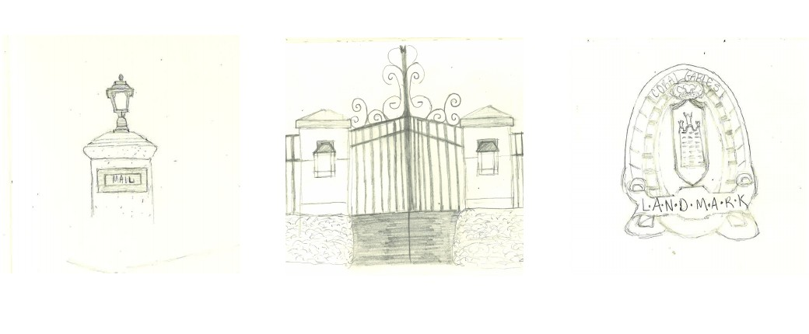
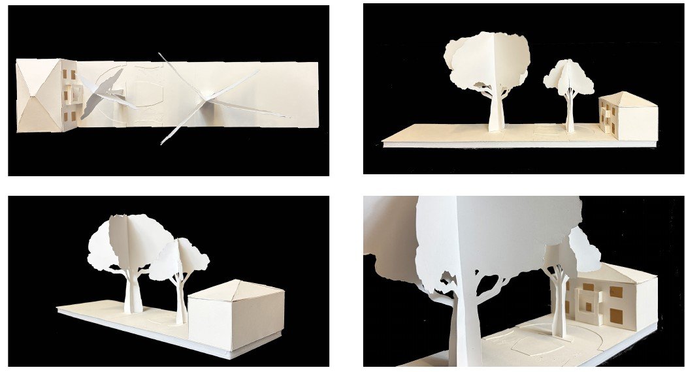
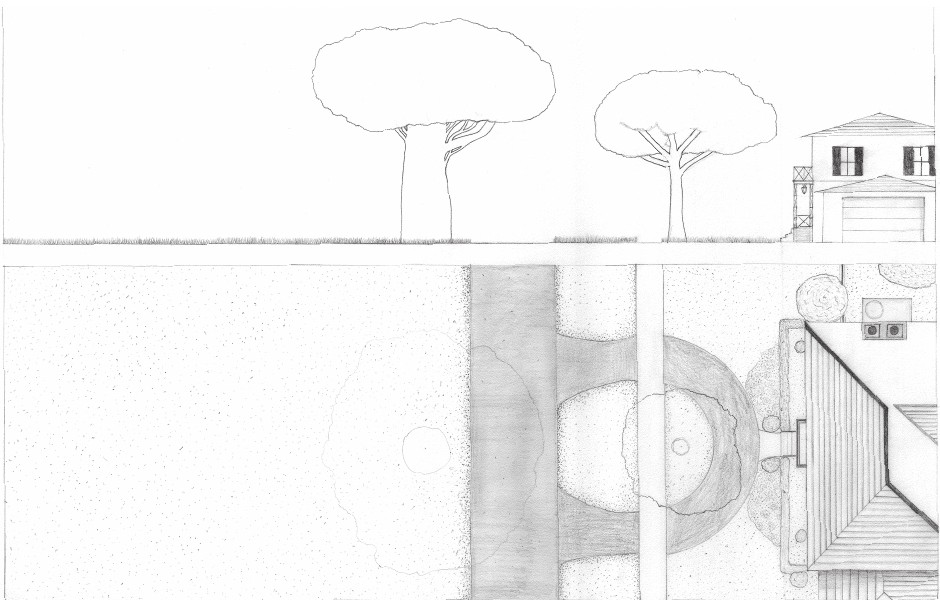

ARC 111: Visualization I · Fall 2026
Street Smarts
University of Miami School of Architecture
Faculty: Maria Cannavo
Street Smarts
The true framework and method of division yet connection throughout a city, the street, should be deeply explored and understood by every architect. This project fostered my first site visit and allowed me to learn the purpose of them through experience. As I walked along the sidewalk on South Greenway Drive, in Coral Gables, Florida, I made sketches and took in the way the space around me made me feel. Furthermore, I tried to understand which parts or collection of parts stimulated specific feelings. It was additionally usefulable to observe the landscape, climate, and community. Then, replicating a portion of the street in a model and a drawing highlighted the layeredness of a street. Learning how these layers---the street, the sidewalk, landscape, and more---work together to create something that flows together beautifully and seamlessly was incredible. The foundational provided by Street Smarts will prove important to an architect forever, making up some of the first steps in every project to come and prompting meaningful observation when engaging with new environments.
Site photograph
Open original PDF ↗Field sketches
Open original PDF ↗
Physical model
Open original PDF ↗
Final drawing
Open original PDF ↗